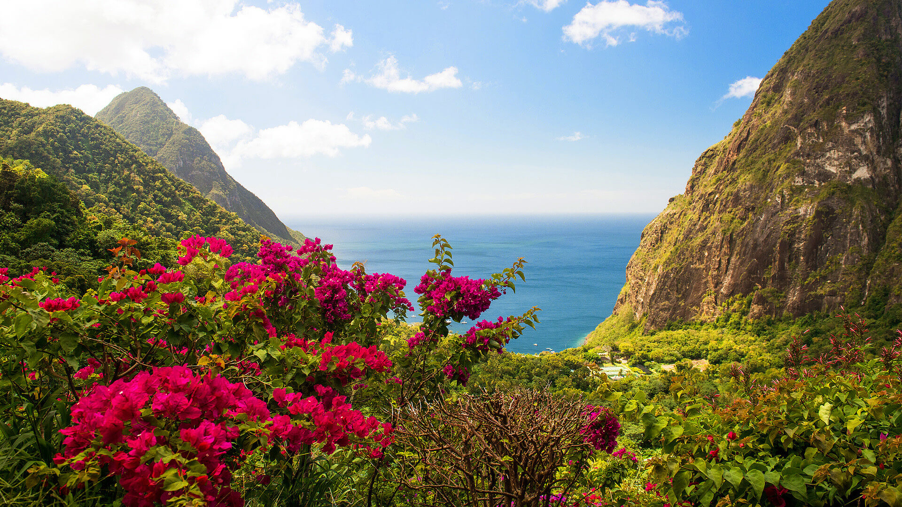
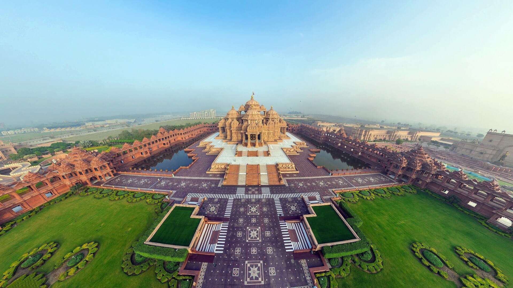
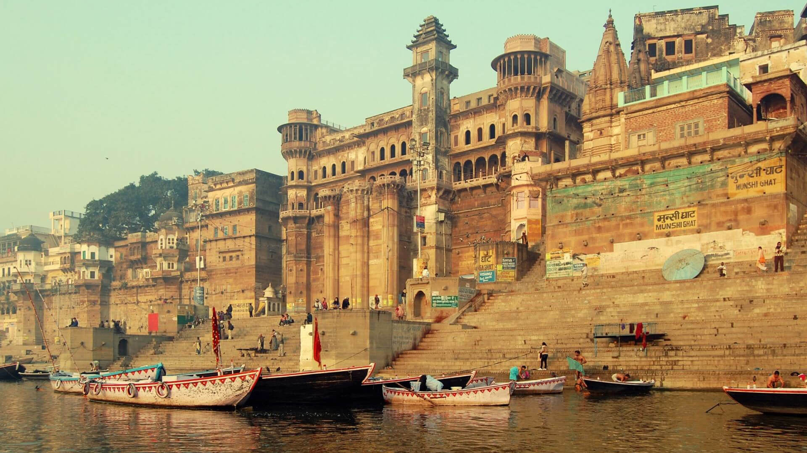
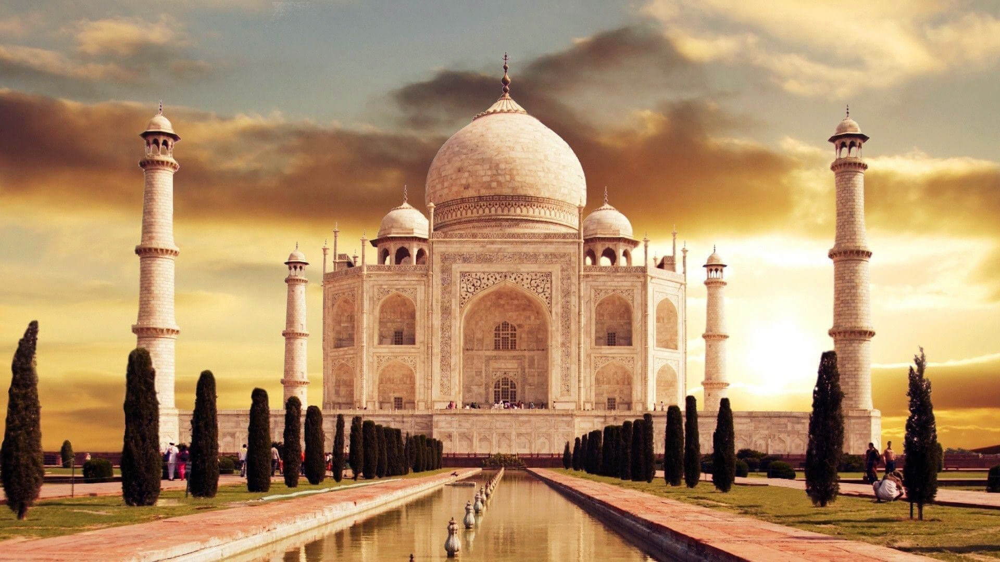

- 
-

- 
- 
- 
-

-

beautiful and captivating India
Best Tours and Trips in 2019
Highlights
Start in New Delhi and end in Kochi (Cochin) ! With the river cruise tour Grand Discovery of India 2 Days, you have a 4 day tour package taking you through New Delhi, India and 13 other destinations in India. Grand Discovery of India 4 Days includes accommodation as well as an expert guide, meals, transport and more.
Be welcomed to North India with a traditional floral garland and red tikka before arriving at your hotel in Delhi for the next two nights.
Explore Old Delhi and India’s largest mosque, Jama Masjid. Dazzle your senses on a rickshaw ride through Asia’s largest wholesale spice bazaar and Delhi’s oldest streets, finishing with a traditional lunch in Dharmpura haveli. Later, visit the inspiration for the Taj Mahal, Humayan’s Tomb and drive past the India Gate and Presidential Avenue. Tonight, enjoy your special welcome dinner.
As the sun begins to rise, drift slowly down the Ganges River and watch the many ghats come to life. Afterwards, take a stroll along the ghats and laneways of the Old City. This afternoon, journey to Sarnath and spend time at one of Buddhism’s most important sites, Deer Park.
Fly to India’s holiest Hindu city, Varanasi for a two night stay.EnrichEnjoy a rickshaw ride to the banks of the Ganges River. Cruise the holy river at dusk whilst listening to the sounds of traditional Indian music. Release sacred offerings into the river and witness the magical ceremony of the evening Aarti.
Visit the City Palace, home to the rulers of Jaipur. Marvel at the magnificent Jantar Mantar, an observatory built in the 18th century. Discover the magnificent Hawa Mahal (Palace of Winds) with its honeycombed sandstone windows. Take a rickshaw ride into small chowkris of the city before returning to your hotel.Freechoice Dining: Learn about traditional Indian cooking with the Ikaki Niwas family or savour the views from high up in Amer Fort whilst dining at 1136 Restaurant. Alternatively, dine in house at the Giardino Italian restaurant.
Begin the day exploring the striking hilltop Amer Fort. Enjoy your farewell dinner at the restored Samode Haveli.
Head down to the harbour and watch the local fishermen expertly handling the Chinese fishing nets. Discover the different colonial influences during your tour of Fort Kochi, then visit Mattancherry Palace, Jew Town and the Synagogue. In the evening, witness a traditional Kathakali performance, a highly evolved classical form of dance, drama and music.
Freechoice: Visit a local market and learn the secrets of South Indian cooking or enjoy a Me Time yoga workshop. Alternatively, visit Kumbalanghi Village to experience traditional village life and activities.Freechoice Dining: Dine at Pepper, an all-day diner, or try Rice Boat, a seafood specialty restaurant. Otherwise try Dolphins Point multi-cuisine barbeque and grill.